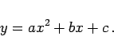
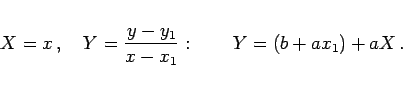
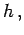
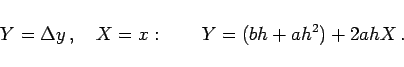

Inhalt Index DeskTop Bronstein

 Funktionen und ihre Darstellung Aufstellung empirischer Kurven Gebräuchlichste empirische Formeln
Funktionen und ihre Darstellung Aufstellung empirischer Kurven Gebräuchlichste empirische Formeln


|  | (2.248a) |
Mögliche Kurvenverläufe dieser Funktion zeigt die folgende Abbildung.
Zur Diskussion des quadratischen Polynoms s. Gleichung (2.41).
Die Koeffizienten a,b und c werden in der Regel nach der Fehlerquadratmethode bestimmt; aber auch hier ist eine Rektifizierung möglich. Nach der Wahl irgendeines Datenpunktes (x1,y1) wird rektifiziert gemäß
|  | (2.248b) |
Bilden die gegebenen x-Werte eine arithmetische Folge mit der Differenz  so rektifiziert man gemäß
|  | (2.248c) |
In beiden Fällen wird nach der Ermittlung von a und b aus der Gleichung
c berechnet, wobei n die Anzahl der gegebenen x-Werte ist, über die summiert wird.